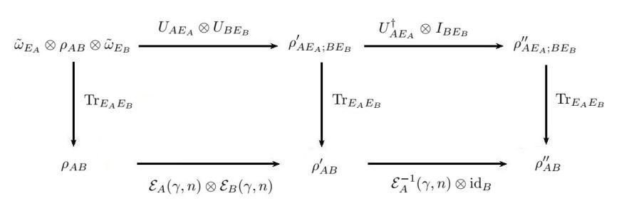

Highlighted author(s): Aashish A. Clerk
Authors: Andrew Lingenfelter, Aashish A. Clerk
Type: theory · Category: statistical mechanics · PDF: https://arxiv.org/pdf/2605.10846v1
Analysis basis: abstract only; PDF text extraction failed or PDF unavailable
Topic relevance: 🔥 driven-dissipative phase transition 4/5 · 🔥 methods for driven-dissipative 4/5 · 🔥 non-equilibrium dynamics 4/5 · non-equilibrium universality 3/5 · correlated / nonlocal dissipation 2/5
Summary. This paper provides exact solutions for the steady states of interacting, dissipative fermionic systems. It reveals that these systems possess a hidden time-reversal symmetry and undergo a first-order phase transition in particle density. The study also highlights the limitations of mean-field approaches in accurately locating these transitions.
Why it may be interesting. It provides an exact analytical tool for studying non-equilibrium phase transitions and symmetry properties in open many-body fermionic systems, which is highly relevant to understanding driven-dissipative dynamics.
Main problem. Finding exact non-equilibrium steady states for driven-dissipative fermionic systems with interactions and identifying underlying symmetries.
Main result. The authors establish the existence of hidden time-reversal symmetry in these models and demonstrate a first-order phase transition in particle density that persists even under finite dissipation.
Method. The researchers generalize the coherent quantum absorber technique to fermionic systems to obtain exact solutions.
Model / system. A class of dissipative spinless fermionic systems characterized by arbitrary Hamiltonian pairing terms, global charging energy interactions, and uniform single-particle loss on every site.
Key observables. Particle density, two-time correlation functions, and the presence of bistability.
Important parameters / regimes. Dissipation rates, particle density, and pairing terms.
Assumptions / limitations. The model assumes uniform single-particle loss across all sites and a specific form of global charging energy interaction.
Paper structure. The paper introduces the model, presents the exact solution via the generalized coherent quantum absorber technique, analyzes the phase transition and density jumps, compares mean-field predictions to exact results, and discusses the implications of hidden time-reversal symmetry on correlation functions.
We present exact solutions for the non-equilibrium steady states of a class of dissipative spinless fermionic systems with arbitrary Hamiltonian pairing terms, global charging energy interactions, and uniform single particle loss on every site. Our exact solution is found by generalizing the coherent quantum absorber technique to fermionic systems, and our result establishes the existence of hidden time-reversal symmetry in driven-dissipative fermionic models. The steady state exhibits a first order phase transition in the particle density, with the resulting jump discontinuity in density persisting even for finite dissipation rates. A mean-field description of the model exhibits a bistable regime that encompasses the first-order transition line yet which fails to accurately predict its precise location via a Maxwell construction. We also show that the model's hidden time-reversal symmetry results in an Onsager symmetry of certain two-time correlation functions.
Authors: Can Yin, Fan Bo, Antonio M. García-García
Type: theory · Category: disordered systems and neural networks · PDF: https://arxiv.org/pdf/2605.10758v1
Analysis basis: abstract only; PDF text extraction failed or PDF unavailable
Topic relevance: 🔥 measurement-induced transitions 5/5 · 🔥 entanglement & information structure 4/5 · driven-dissipative phase transition 3/5 · non-equilibrium dynamics 3/5 · non-equilibrium universality 3/5 · quantum measurements 3/5 · Keldysh / 2PI / non-Gaussian methods 2/5 · methods for driven-dissipative 2/5
Summary. This paper proves that measurement-induced phase transitions do not occur in 1D non-interacting fermions under monitoring in disordered or quasi-periodic potentials. By using much larger system sizes and analytical NLSM mapping, the authors show that the system stays in an area-law phase. This clarifies that previous reports of a transition were artifacts of small system sizes.
Why it may be interesting. It provides a critical correction to the understanding of measurement-induced dynamics and highlights how finite-size effects can lead to false signatures of phase transitions in monitored many-body systems.
Main problem. The paper investigates whether a measurement-induced phase transition (MIPT) exists in the entanglement dynamics of 1D non-interacting fermions subject to monitoring in the presence of disorder or quasi-periodic potentials.
Main result. The authors demonstrate that no MIPT occurs; the system remains in an area-law phase for any monitoring strength, revealing that previous claims of a transition were due to finite-size effects.
Method. The study employs large-scale GPU-accelerated numerical simulations (up to L=18000) with finite-size scaling analysis and an analytical approach using a nonlinear sigma model (NLSM) mapping.
Model / system. One-dimensional non-interacting fermions with U(1) symmetry in a disordered or quasi-periodic potential, subject to continuous monitoring via homodyne or quantum jump protocols.
Key observables. Entanglement entropy (EE) and correlation length.
Important parameters / regimes. Monitoring strength, disorder strength, system size (L), and quasi-periodic potential parameters.
Assumptions / limitations. The system is non-interacting and follows U(1) symmetry conservation.
Paper structure. The paper presents numerical evidence via large-scale simulations to refute previous MIPT claims, followed by an analytical derivation using a nonlinear sigma model to confirm the absence of the transition in the disordered case.
We show that the entanglement entropy (EE) of one-dimensional (1d) non-interacting fermions with $U(1)$ symmetry in the presence of a quasi-periodic or disordered potential in which the occupation number is being monitored by homodyne or quantum jump protocols is always in an area-law phase so no measurement induced phase transition (MIPT) occurs. The reason for the previously claimed MIPT in these systems was a finite size effect related to the fact that the maximum lattice size $L \sim 500$ was of the order of the correlation length. By increasing the system size up to $L \leq 18000$, employing Graphics Processing Unit (GPU), and performing a careful finite size scaling analysis, we find that the critical monitoring strength is consistent with zero so no MIPT occurs. For the disordered case, these numerical results are fully supported by an analytical calculation based on mapping the problem onto a nonlinear sigma model (NLSM) with an additional mass-like term that confirms the absence of the MIPT for any monitoring or disorder strength. Another salient feature of the disordered case, in part related to a different symmetry in the NLSM, is that the correlation length in the weak disorder limit is longer than in the clean limit and increases with the disordered strength.
Authors: Anna Dalmasso, Arash Jafarizadeh, Julian Boesl, Jared Jeyaretnam, Sheng-Hsuan Lin, Andrew G. Green, Frank Pollmann, Michael Knap, Juan P. Garrahan, Henrik Dreyer, Adam Gammon-Smith
Type: experiment · Category: quantum information and computing · PDF: https://arxiv.org/pdf/2605.08350v1
Analysis basis: abstract only; PDF text extraction failed or PDF unavailable
Topic relevance: 🔥 QC/QI experiment 5/5 · 🔥 non-equilibrium dynamics 4/5 · 🔥 quantum measurements 4/5 · methods for driven-dissipative 3/5 · driven-dissipative phase transition 2/5
Summary. This paper reports the experimental simulation of 2D non-equilibrium steady states using a trapped-ion quantum computer. By utilizing mid-circuit measurements, the researchers successfully modeled quantum trajectories of interacting particles under stochastic driving. The study shows how particle statistics and magnetic fields influence the resulting persistent currents in a corner-driven lattice.
Why it may be interesting. It demonstrates a practical application of quantum computing hardware (mid-circuit measurements/feedback) to study complex non-equilibrium steady states and transport phenomena in 2D, which are classically difficult to simulate.
Main problem. Simulating the non-equilibrium steady states and quantum trajectories of 2D interacting many-body systems using a digital quantum processor.
Main result. Experimental realization of quantum trajectories for 2D hard-core bosons and fermions under stochastic driving, demonstrating how particle statistics, interactions, and magnetic fields affect the steady-state persistent current.
Method. Implementation of quantum trajectory simulation using mid-circuit measurements and feedback on the Quantinuum System Model H1 trapped-ion quantum computer.
Model / system. A two-dimensional square lattice of interacting particles (hard-core bosons or fermions) subject to stochastic driving at a source and drain located at opposite corners.
Key observables. Steady-state particle distribution, persistent current, and effects of particle statistics and magnetic fields.
Important parameters / regimes. Particle statistics (bosons vs. fermions), presence of interactions, and magnetic field strength.
Assumptions / limitations. The simulation relies on the availability of mid-circuit measurements and feedback capabilities on the trapped-ion hardware.
Paper structure. The paper introduces the utility of digital quantum computers for open systems, describes the experimental setup on the Quantinuum H1 platform, details the implementation of the 2D stochastic driving, and analyzes the resulting steady-state physics.
Digital quantum computers offer a promising route for studying complex many-body systems that are otherwise inaccessible by their classical counterparts. Capabilities including mid-circuit measurements and feedback allow for simulating the dynamics of interacting open quantum systems. Using the Quantinuum System Model H1 trapped-ion quantum computer, we experimentally realise quantum trajectories for a two-dimensional system of (interacting) particles-hard-core bosons or fermions-undergoing stochastic driving at a source and drain at opposite corners of a square lattice. We study the non-equilibrium steady state with persistent current resulting from the this in/out flow of particles. The particle statistics, presence of interactions, and introduction of a magnetic field produce measurable effects on the steady state. Our findings highlight the rich physics in this corner driven two-dimensional setup and showcases both the power and current limitations of quantum computers as a platform to study it.
Authors: J. C. López Carreño, S. Świerczewski, A. Opala, A. Salavrakos, B. Piętka, M. Matuszewski
Type: experiment · Category: quantum information and computing · PDF: https://arxiv.org/pdf/2605.10471v1
Analysis basis: abstract only; PDF text extraction failed or PDF unavailable
Topic relevance: 🔥 QC/QI experiment 5/5 · 🔥 quantum optics experiment 4/5 · entanglement & information structure 3/5 · quantum measurements 3/5 · analog quantum simulation 2/5
Summary. The researchers developed a silicon-based photonic reservoir computing device capable of performing both classical and quantum machine learning tasks. By using single photons, the system can perform complex tasks like quantum state tomography and entanglement detection. The study also introduces an error mitigation technique that improves accuracy beyond what is possible in the classical regime.
Why it may be interesting. This work is highly relevant to quantum optics and open quantum systems as it demonstrates a practical, scalable photonic platform for reservoir computing and provides a method for mitigating experimental noise in quantum state characterization.
Main problem. The high computational demands of classical machine learning and the difficulty of probing quantum states in the presence of experimental imperfections.
Main result. Demonstration of a quantum reservoir computing device on a silicon chip that performs both classical and quantum machine learning tasks, including quantum state tomography and entanglement measurement.
Method. Implementation of a quantum reservoir processing device using a programmable silicon photonic chip excited with single photons, combined with an error mitigation method.
Model / system. A programmable silicon photonic chip platform operating in the single-photon regime, utilized as a quantum reservoir for processing information.
Key observables. Quantum state tomography, negativity (as a measure of entanglement), and processing accuracy.
Important parameters / regimes. The deep quantum regime (single-photon excitation) and the comparison between quantum and classical operating regimes.
Paper structure. The paper introduces the motivation for quantum machine learning, describes the implementation of the photonic reservoir on a silicon chip, demonstrates its capability in both classical and quantum tasks, and presents an error mitigation technique.
Artificial intelligence and machine learning have been widely adopted both in the industry and in everyday life, but at the cost of high compute demands. Recent studies show that implementing machine learning in physical systems in the deep quantum regime could not only lead to faster information processing, but also to perform tasks that are out of reach for classical systems. Here, we report a quantum reservoir processing device capable of performing both quantum and classical machine learning tasks. The implementation is realized with a programmable silicon chip excited with single photons, a highly scalable and adaptable photonics technology. We successfully implement a variety of quantum tasks, including quantum state tomography and measurement of entanglement via negativity. Moreover, we implement a method of mitigation of experimental imperfections which results in a significant improvement in accuracy in comparison to the same system operating in the classical regime. Our results demonstrate a method to overcome a crucial bottleneck of quantum technologies by providing a practical way of probing quantum states.
Authors: Yu Wang, Ryan Cimmino, Kenneth Wang, Santiago Lopez, Jeffery Li, Jin Ming Koh, Jonathan N. Hallén, Anne Matthies, Norman Y. Yao, Kang-Kuen Ni
Type: experiment · Category: other · PDF: https://arxiv.org/pdf/2605.10924v1
Analysis basis: abstract only; PDF text extraction failed or PDF unavailable
Topic relevance: 🔥 Rydberg arrays 5/5 · 🔥 QC/QI experiment 4/5 · quantum measurements 3/5
Summary. The researchers developed a method to perform simultaneous, non-destructive readout of multiple qubits in a dual-species (Na and Cs) Rydberg array. By compensating for interspecies interaction errors, they achieved high-fidelity stabilizer measurements using only global pulses. This approach provides a scalable pathway for implementing quantum error correction in neutral atom platforms.
Why it may be interesting. It presents a practical solution to the crosstalk and scalability issues in Rydberg-based quantum computing by leveraging the independent control of two atomic species.
Main problem. Achieving efficient, crosstalk-free, and non-destructive multi-qubit stabilizer readout in neutral atom arrays for quantum error correction.
Main result. Demonstration of a protocol for simultaneous, non-destructive, in situ stabilizer readout of multiple Cs data qubits using Na ancilla atoms via global Rydberg pulses.
Method. Implementation of a dual-species (Na and Cs) 2D optical tweezer array where Na atoms act as ancillas, using tuned Rabi frequency and detuning to compensate for interspecies Rydberg-Rydberg interaction errors.
Model / system. A dual-species Rydberg array consisting of co-localized Na and Cs atoms trapped in 2D optical tweezer arrays.
Key observables. Pauli-Z stabilizers on four-qubit Cs plaquettes.
Important parameters / regimes. Rabi frequency, Rydberg driving field detuning, and interspecies Rydberg-Rydberg interaction strength.
Assumptions / limitations. The protocol assumes that geometric phase errors arising from finite interspecies interactions can be effectively compensated by tuning control parameters.
Paper structure. The paper introduces the dual-species platform, identifies the error mechanism due to interspecies interactions, presents the compensation protocol, and demonstrates the non-destructive readout of Pauli-Z stabilizers.
The ability to locally control and measure subsets of ancilla qubits in an efficient and crosstalk-free manner is a key ingredient in quantum error correction (QEC). Dual-species neutral atom arrays offer an ideal implementation of these capabilities, enabling independent state preparation, manipulation, and detection on each species. In this work, we realize such a dual-species Rydberg array of Na and Cs atoms trapped in co-localized 2D optical tweezer arrays, using Na as an ancilla to measure stabilizers of surrounding Cs data qubits. We identify the finite interspecies Rydberg-Rydberg interaction strength as a practical obstacle to high-fidelity multi-body entanglement and show that, by tuning the Rabi frequency and the detuning of the Rydberg driving field, the resulting geometric phase error can be compensated. This yields a protocol for simultaneous, non-destructive, in situ stabilizer readout of multiple data qubits via global pulses alone. Using this protocol, we demonstrate non-destructive measurement of Pauli-Z stabilizers on four-qubit Cs plaquettes via a single global Rydberg pulse sequence. Our results demonstrate dual-species tweezer arrays as a promising route towards scalable QEC and open the door to new quantum control protocols leveraging both interspecies and intraspecies interactions.
Authors: Yair Margalit, Omri Davidson, Oded Zemer, Yoad Michael, Orel Bechler, Dror Liran, Noam Gross, Doron Azoury, Jeremy Raskop, Yaakov Yudkin, Gabriel Guendelman, Moshe Katzman, Michael Nagli, Yair Antman, Nadav Kandel, Geva Arwas, Idit Peer, Ofer Firstenberg, Barak Dayan
Type: experiment · Category: other · PDF: https://arxiv.org/pdf/2605.09532v1
Analysis basis: abstract only; PDF text extraction failed or PDF unavailable
Topic relevance: 🔥 quantum optics experiment 5/5 · QC/QI experiment 3/5
Summary. This paper demonstrates the successful trapping of a single rubidium atom extremely close to the surface of a silicon-nitride microring resonator. By using a specialized cooling mechanism, the researchers achieved strong atom-photon coupling, which is a critical building block for scalable, chip-based quantum information networks.
Why it may be interesting. This work is highly relevant for quantum optics and open quantum systems as it demonstrates a practical implementation of cavity QED on a CMOS-compatible chip, achieving the strong coupling regime (cooperativity > 1) using evanescent fields.
Main problem. Trapping a single atom at subwavelength distances from a planar photonic resonator is challenging due to the need for strong coupling to guided modes while avoiding surface-induced decoherence.
Main result. The researchers demonstrated efficient trapping of a single rubidium atom within the evanescent field of a silicon-nitride microring resonator at 150-200 nm from the surface, achieving single-atom cooperativity greater than unity.
Method. The team used an evanescent-field Sisyphus cooling mechanism to achieve single-stroke loading, where a single scattering event dissipates kinetic energy to trap the atom.
Model / system. The experimental platform consists of an integrated silicon-nitride microring resonator interacting with a single ultracold rubidium atom in its evanescent field.
Key observables. On-chip photon collection, photon antibunching, and Purcell-enhanced spontaneous emission.
Important parameters / regimes. Trapping distances of 150-200 nm, single-atom cooperativity exceeding unity, and trapping durations ranging from sub-millisecond to 1 second.
Paper structure. The paper introduces the challenge of atom-photon coupling on chips, describes the experimental setup of the SiN microring, details the Sisyphus-like loading mechanism, presents the results of atom trapping and coupling efficiency, and concludes with the implications for scalable quantum circuits.
Strong atom-photon interactions on scalable photonic platforms hold significant potential for both atomic and photonic quantum information platforms. In particular, trapping of a single atom on a planar photonic integrated resonator at the subwavelength distances required for strong coupling to the guided modes has remained an outstanding challenge. Here we demonstrate efficient trapping of a single ultracold rubidium atom within the evanescent field of an integrated silicon-nitride microring resonator, at distances of 150-200 nm from the chip surface. Efficient, single-stroke loading process is achieved using an evanescent-field mechanism related to Sisyphus cooling, in which a single scattering event dissipates the atom's kinetic energy and transfers it into a near-surface trap. We observe logarithmic scaling of trapping durations spanning from sub-millisecond timescales up to 1 second, without continuous cooling. The trapped atom couples efficiently to the resonator, enabling on-chip photon collection, photon antibunching, and Purcell-enhanced spontaneous emission with single-atom cooperativity exceeding unity. Our results establish the potential of CMOS-compatible chip-based atom-photon interfaces for scalable quantum photonic circuits.
Authors: Atsushi Oyaizu, Hongchao Li, Masaya Nakagawa, Masahito Ueda
Type: theory · Category: statistical mechanics · PDF: https://arxiv.org/pdf/2605.10459v1
Analysis basis: abstract only; PDF text extraction failed or PDF unavailable
Topic relevance: 🔥 driven-dissipative phase transition 4/5 · 🔥 measurement-induced transitions 4/5 · 🔥 methods for driven-dissipative 4/5 · 🔥 non-equilibrium universality 4/5 · entanglement & information structure 3/5 · non-equilibrium dynamics 3/5 · quantum measurements 3/5
Summary. The paper extends the renormalization group theory to nonunitary quantum dynamics driven by dissipation and measurement. It reveals that the interplay between coherence and decoherence can produce chaotic RG flows and maps measurement-induced PT transitions to the Yang-Lee edge singularity. This provides a theoretical guide for simulating imaginary fields in lattice spin systems.
Why it may be interesting. This is highly relevant for researchers in open quantum systems and many-body dynamics as it provides a new RG framework for non-equilibrium processes and links measurement-induced transitions to well-known statistical mechanics singularities.
Main problem. The paper addresses the challenge of generalizing the renormalization group (RG) framework from equilibrium ground-state properties to nonunitary quantum dynamics characterized by dissipation and measurement backaction.
Main result. The authors develop an RG approach for quantum operations via real-time coarse-graining, discovering that the competition between decoherence and coherent dynamics can lead to chaotic RG flows without fixed points and identifying the measurement-induced PT transition as belonging to the 1D Yang-Lee edge singularity universality class.
Method. The study employs a real-time coarse-graining technique applied to quantum operations to track the evolution of the RG flow.
Model / system. The framework is applied to nonunitary quantum dynamics governed by quantum operations, specifically focusing on systems exhibiting parity-time (PT) symmetry and measurement-induced transitions.
Key observables. RG flow behavior, fixed points, and the universality class of the transition.
Important parameters / regimes. The balance between decoherence and coherent dynamics, and the presence of imaginary fields.
Assumptions / limitations. The study assumes the dynamics can be effectively described by quantum operations and real-time coarse-graining.
Paper structure. The paper introduces the problem of nonunitary RG, presents the real-time coarse-graining method, analyzes the competition between decoherence and coherence, demonstrates chaotic flows in PT-symmetric systems, and identifies the universality class of the measurement-induced transition.
The renormalization group (RG) in statistical physics focuses on ground-state properties of equilibrium systems. However, it is unclear how it should be generalized to nonunitary quantum dynamics caused by dissipation and measurement backaction, in which the notion of conserved energy is absent. Here, we extend the RG to cover nonunitary quantum dynamics governed by quantum operations. By performing coarse-graining in real time, we find that the competition between decoherence and coherent dynamics plays a decisive role in the behavior of the RG flow. In particular, we find that chaotic behavior without fixed points emerges in the RG flow when coherent dynamics is dominant, with the parity-time transition serving as a prototypical example. The measurement-induced parity-time transition belongs to the universality class of the one-dimensional Yang-Lee edge singularity, which serves as a guide for experimentally realizing imaginary fields in lattice spin systems with a quantum system.
Authors: X. Z. Zhang
Type: theory · Category: strongly correlated electrons · PDF: https://arxiv.org/pdf/2605.09274v1
Analysis basis: abstract only; PDF text extraction failed or PDF unavailable
Topic relevance: 🔥 correlated / nonlocal dissipation 4/5 · 🔥 scars & prethermalization 4/5 · methods for driven-dissipative 3/5 · non-equilibrium dynamics 3/5 · driven-dissipative phase transition 2/5
Summary. This paper introduces a microscopic theory for the emergence of slow Liouvillian sectors in open correlated lattices through a resonant-shell mechanism. It shows how local resonances between doublons and bonds create composite orbitals that govern long-lived dynamics, such as edge-memory and density-dressed defects. This work bridges the gap between local microscopic interactions and the emergence of macroscopic slow dynamics in open quantum systems.
Why it may be interesting. It provides a microscopic foundation for understanding how dissipation-engineered environments can selectively isolate specific slow-moving many-body degrees of freedom in correlated systems.
Main problem. Understanding the microscopic mechanism by which specific slow Liouvillian sectors are selected in an open, correlated lattice system.
Main result. The authors identify a resonant-shell mechanism where a local interaction between an on-site doublon and a nearest-neighbor bond creates a composite shell orbital that dictates the dynamics of slow sectors.
Method. The study employs a microscopic theory and a Schur-projection framework to derive the effective dynamics of the selected shell.
Model / system. An open correlated lattice featuring on-site doublons and nearest-neighbor bonds, subject to reservoir-engineered dissipation.
Key observables. Liouvillian poles (edge-memory pole, shell-critical doublet), shell mobility, and the density-dressed shell Hamiltonian.
Important parameters / regimes. Doublon weight, shell filling density, and the regime of dilute vs. finite shell filling.
Assumptions / limitations. The theory assumes the existence of a local interacting resonance between doublons and bonds as the fundamental starting point.
Paper structure. The paper develops a microscopic theory, moves from the local resonance definition to the projection onto a dimerized channel, analyzes the dilute regime (edge-memory), examines the shell-critical point, and concludes with the finite-filling density-dressed regime using a Schur-projection framework.
We develop a microscopic theory for how slow Liouvillian sectors are selected in an open correlated lattice. The starting point is not a postulated non-Hermitian band, but a local interacting resonance between an on-site doublon and a branch-resolved nearest-neighbor bond. This resonance defines a composite shell orbital whose doublon weight controls reservoir visibility and whose mixed doublon-bond character controls shell mobility. Projecting the microscopic hopping onto the selected shell yields a branch-selective dimerized channel. In the dilute regime, a boundary doublon-loss channel yields an exponentially slow edge-memory pole through a Zeno-type return. At the shell-critical point, the edge pole is replaced by a near-zero standing-wave doublet with an algebraic coherent spacing. At finite shell filling, the same local shell becomes density dressed. A number-conserving phase-locking jump removes a bright mismatch sector, leaving defects as the asymptotic slow variables and producing a diffusive finite-size gap. We derive the local shell, the projected branch topology, the edge-memory law, the shell-critical doublet, the density-dressed shell Hamiltonian, and the defect generator within one Schur-projection framework. The resulting mechanism identifies the reservoir-engineered fast block as the selector of the observable slow sector, while the microscopic parent shell remains fixed.
Authors: Lorenzo Dominici, David Colas, Stefano Donati, Galbadrakh Dagvadorj, Antonio Gianfrate, Carlos Sánchez Muñoz, Dario Ballarini, Milena De Giorgi, Giuseppe Gigli, Marzena H. Szymańska, Fabrice P. Laussy, Daniele Sanvitto
Type: experiment · Category: quantum gases · PDF: https://arxiv.org/pdf/2605.10403v1
Analysis basis: abstract only; PDF text extraction failed or PDF unavailable
Topic relevance: 🔥 quantum optics experiment 4/5 · interference shaping light 3/5 · non-equilibrium dynamics 3/5 · driven-dissipative phase transition 2/5 · exotic spin models in light-matter 2/5 · quantum measurements 2/5
Summary. The researchers developed a method to shape the polarization and topology of polariton fluids on a sub-picosecond timescale using dual-pulse excitation. They successfully manipulated states on the Bloch and Poincaré spheres and created complex, oscillating topological structures like skyrmions and swirling vortices. This work provides a platform for ultrafast control of light-matter quantum fluids.
Why it may be interesting. It demonstrates high-speed manipulation of topological textures and angular momentum in a light-matter fluid, which is highly relevant for ultrafast quantum optics and the study of non-equilibrium many-body dynamics.
Main problem. Achieving ultrafast coherent control over the polarization, topological, and angular momentum states of polariton fluids.
Main result. Demonstration of sub-picosecond control over polariton states on the Bloch and Poincaré spheres, including the creation of dynamical skyrmions and new types of ultrafast swirling vortices with spiraling phase singularity tubes.
Method. Coherent control using two resonant excitation pulses combined with digital off-axis holography for ultrafast imaging of the complex wavefunction.
Model / system. A two-dimensional quantum fluid of polaritons formed by the strong coupling between quantum well excitons and microcavity photons.
Key observables. Polariton complex wavefunction, polarization states (Bloch/Poincaré sphere), phase singularities, and angular momentum.
Important parameters / regimes. Sub-picosecond Rabi oscillations, two-pulse excitation scheme, and the splitting of vortices into upper and lower polariton branches.
Paper structure. The paper introduces the polariton platform, describes the two-pulse coherent control scheme, presents the holographic imaging technique, and then details the results for Bloch sphere control, Poincaré sphere sweeping, skyrmion dynamics, and the creation of swirling vortices.
Here we present different approaches to ultrafast pulse and polarization shaping, based on a ``quantum fluid'' platform of polaritons. Indeed we exploit the normal modes of two dimensional polariton fluids made of strong coupled quantum well excitons and microcavity photons, by rooting different polarization and topological states into their sub-picosecond Rabi oscillations. Coherent control of two resonant excitation pulses allows us to prepare the desired state of the polariton, taking benefit from its four-component features given by the combination of the two normal modes with the two degrees of polarization. An ultrafast imaging based on the digital off-axis holography technique is implemented to study the polariton complex wavefunction with time and space resolution. We show in order coherent control of the polariton state on the Bloch sphere, an ultrafast polarization sweeping of the Poincaré sphere, and the dynamical twist of full Poincaré states such as the skyrmion on the sphere itself. Finally, we realize a new kind of ultrafast swirling vortices by adding the angular momentum degree of freedom to the two-pulse scheme. These oscillating topology states are characterized by one or more inner phase singularities tubes which spirals around the axis of propagation. The mechanism is devised in the splitting of the vortex into the upper and lower polaritons, resulting in an oscillatory exchange of energy and angular momentum and in the emitted time and space structured photonic packets.
Authors: Ze-Sheng Xu, Liwei Duan, Rohan Yadgirkar, Andrea Cataldo, Adrian Iovan, Jun Gao, Ali W. Elshaari
Type: experiment · Category: quantum information and computing · PDF: https://arxiv.org/pdf/2605.08875v1
Analysis basis: abstract only; PDF text extraction failed or PDF unavailable
Topic relevance: 🔥 QC/QI experiment 4/5 · 🔥 analog quantum simulation 4/5 · 🔥 non-equilibrium dynamics 4/5 · quantum optics experiment 3/5
Summary. This paper reports the first experimental realization of Bloch-Siegert physics using a programmable photonic integrated circuit. By simulating a binary lattice, the authors demonstrate long-range resonant tunneling and achieve high-fidelity unidirectional transport. This work establishes photonic lattices as a versatile testbed for studying complex driven quantum dynamics.
Why it may be interesting. It provides a scalable, programmable platform for studying strongly driven quantum-optical phenomena and Floquet-engineered transport using classical photonic analogues of quantum-optical models.
Main problem. Demonstrating the experimental correspondence between the Bloch-Siegert shift in driven two-level systems and resonant long-range tunneling in static binary lattices.
Main result. The researchers experimentally realized the Bloch-Siegert-like physics in a 12-mode programmable photonic integrated circuit, observing coherent periodic jumps and achieving high-fidelity unidirectional transport.
Method. Implementation of a reconfigurable photonic binary lattice with sub-percent control of on-site detuning to simulate the dynamics of the semiclassical Rabi model.
Model / system. A 12-mode programmable photonic integrated circuit configured as a reconfigurable binary lattice with a staggered potential.
Key observables. Coherent periodic jumps across resonance orders, level-anticrossing dynamics, and transport fidelities.
Important parameters / regimes. On-site detuning, lattice spacing (odd vs even), and adaptive sign reversal of the staggered potential.
Paper structure. The paper introduces the theoretical correspondence between Bloch-Siegert shifts and binary lattice tunneling, describes the experimental photonic platform, presents the observation of resonance-driven jumps and the verification of the period law, and demonstrates unidirectional transport via potential reversal.
The Bloch Siegert shift, a hallmark correction arising from counter-rotating interactions in driven two-level systems, has an exact counterpart in binary lattices under static forcing, where it governs resonant long-range tunneling between sites separated by odd lattice spacings. Here we report the first experimental realization of this correspondence using a 12 mode programmable photonic integrated circuit. By implementing a reconfigurable binary lattice with sub-percent control of on-site detuning, we observe coherent periodic jumps across four resonance orders and quantitatively verify the predicted period law over the full parameter space. The measured dynamics exhibit the extreme resonance sensitivity characteristic of Bloch Siegert physics and agree closely with the level-anticrossing picture of the semiclassical Rabi model. Exploiting the underlying parity structure, we further convert intrinsically bidirectional oscillations into cascaded unidirectional transport through adaptive sign reversal of the staggered potential, achieving fidelities exceeding 0.95 and 0.98 on the same hardware platform. Our results establish programmable photonic lattices as a scalable testbed for strongly driven quantum-optical phenomena and Floquet-engineered transport.
Authors: Leon J. Sieke, Jessica Fuchs, Lorenz von Smekal
Type: theory · Category: statistical mechanics · PDF: https://arxiv.org/pdf/2605.10346v1
Analysis basis: abstract only; PDF text extraction failed or PDF unavailable
Topic relevance: 🔥 non-equilibrium dynamics 4/5 · 🔥 non-equilibrium universality 4/5 · driven-dissipative phase transition 3/5 · Keldysh / 2PI / non-Gaussian methods 2/5 · methods for driven-dissipative 2/5
Summary. This paper explores how relativistic scalar fields behave during first-order phase transitions when driven linearly. It reveals that fast driving can induce universal scaling behavior similar to mean-field models, while slow driving leads to a crossover to Kibble-Zurek scaling. The findings establish the conditions under which universal non-equilibrium scaling can be observed despite the presence of nucleation.
Why it may be interesting. The paper provides deep insights into the universality of non-equilibrium phase transitions and the competition between nucleation and critical scaling, which is highly relevant to many-body dynamics and driven-dissipative systems.
Main problem. Investigating the out-of-equilibrium dynamics and scaling behavior of a relativistic scalar field theory undergoing a first-order phase transition under linear driving.
Main result. The study identifies a regime of universal non-equilibrium scaling for temperatures near Tc, where fast driving leads to mean-field-like finite-time scaling, while slow quenches exhibit a crossover to Kibble-Zurek scaling.
Method. Classical-statistical lattice simulations using Langevin dynamics.
Model / system. A relativistic Z2-symmetric scalar field theory in two and three spatial dimensions.
Key observables. Order parameter and its associated universal scaling functions.
Important parameters / regimes. Driving timescale, critical temperature (Tc), dimensionality (2D and 3D), and the temperature regime (near Tc vs. T << Tc).
Assumptions / limitations. The dynamics are governed by Langevin dynamics within a classical-statistical framework.
Paper structure. The paper investigates the dynamics of a scalar field under driving, compares fast vs. slow quench regimes, analyzes the crossover between mean-field and Kibble-Zurek scaling, and computes universal scaling functions.
We investigate the out-of-equilibrium dynamics of a relativistic $Z_2$-symmetric scalar field theory with Langevin dynamics in two and three spatial dimensions under linear driving across magnetic first-order phase transitions, close to and far below the critical temperature $T_c$. Using classical-statistical lattice simulations, we find that if the driving timescale is sufficiently fast, the system exhibits finite-time scaling behavior independent of temperature and dimensionality, identical to that observed in mean-field simulations. In slow quenches near $T_c$ this mean-field behavior crosses over to critical Kibble-Zurek scaling behavior, while for temperatures $T \ll T_c$ nucleation and growth dominate the transition dynamics, resulting in corrections to scaling. Near the transition point where the order parameter changes sign, the crossover between mean-field and critical out-of-equilibrium dynamics is found to be well described by the leading algebraic correction to Kibble-Zurek scaling. We find that universal non-equilibrium scaling behavior can be observed for $T \lesssim T_c$, provided the driving is fast enough to avoid nucleation but slow enough for correlations to form, and compute the associated universal scaling functions for the order parameter.
Authors: Simon Roggors, Thomas Unden, Anna Aubele, Paul Mentzel, Gregor Bayer, Alon Salhov, Jochen Scharpf, Martin B. Plenio, Alex Retzker, Fedor Jelezko, Tim R. Eichhorn, Tobias A. Schaub, Matthias Pfender, Philipp Neumann, Ilai Schwartz
Type: experiment · Category: quantum information and computing · PDF: https://arxiv.org/pdf/2605.10077v1
Analysis basis: abstract only; PDF text extraction failed or PDF unavailable
Topic relevance: 🔥 QC/QI experiment 4/5 · 🔥 quantum optics experiment 4/5 · spintronics-quantum-optics interface 3/5 · quantum measurements 2/5
Summary. The researchers have successfully demonstrated a single-molecule spin-photon interface using a triplet ground state carbene molecule. By embedding the molecule in a matching host crystal, they achieved high spectral stability and long-lived spin coherence. This establishes molecular systems as a viable, bottom-up approach for building quantum networks and distributed quantum computing.
Why it may be interesting. It demonstrates a scalable, chemically programmable platform for quantum networking and single-emitter quantum optics, bridging the gap between molecular physics and solid-state quantum information processing.
Main problem. The lack of a robust spin-photon interface in molecular systems that combines bright fluorescence, high spectral stability, and long spin lifetimes for individual qubit detection.
Main result. Demonstration of a triplet ground state carbene molecule in a host crystal acting as a robust spin-photon interface with single-molecule addressability, featuring millisecond-scale coherence and stable optical transitions.
Method. Experimental implementation of single-molecule optically detected magnetic resonance (ODMR) and coherent control (dynamical decoupling) on a carbene molecule embedded in a host crystal.
Model / system. A triplet ground state carbene molecule embedded within a structurally matched host crystal, utilized as a single-emitter platform for quantum optics.
Key observables. Zero-phonon line width, spectral stability, spin-selective optical transitions, spin relaxation time (T1), and dynamical-decoupling coherence time.
Important parameters / regimes. Temperature of 4.5 K, spectral stability exceeding one hour, and millisecond-scale coherence.
Assumptions / limitations. The host crystal is structurally matched to the carbene molecule to ensure stability and minimize decoherence.
Paper structure. The paper introduces the motivation for molecular qubits, describes the experimental setup of the carbene molecule in a host crystal, presents the characterization of the spin-photon interface (spectral stability and optical transitions), demonstrates single-molecule ODMR, and concludes with the demonstration of coherent control and spin relaxation.
Optical interfaces that connect long-lived spin qubits to photons are a central requirement for quantum networking and distributed quantum information processing. Currently, solid-state atomic defects are leading candidates due to their inherent spin and optical coherence. Building on these advancements, synthetically tailored molecular systems represent a fundamental change in the field, utilizing precise atomic control and consistent bottom-up assembly. However, the lack of a robust spin-photon interface combining bright fluorescence, high spectral stability, and the persistent spin lifetimes inherent to ground-state systems has prohibited the detection of individual molecular qubits. Here we show that a triplet ground state carbene molecule, embedded within a structurally matched host crystal, functions as a robust spin-photon interface with single-molecule addressability. The system exhibits narrow zero-phonon lines, spectral stability over more than an hour, spin-selective optical transitions and single-molecule optically detected magnetic resonance. Coherent control yields millisecond-scale dynamical-decoupling coherence and tens-of-milliseconds spin relaxation at a temperature of 4.5 K. These results establish molecular qubits as a viable platform for single-emitter quantum optics while preserving the advantages of bottom-up chemical design and processable materials.
Authors: Sergio Cerezo-Roquebrún, Jan Thorben Schneider, Stefano Carignano, Aleix Bou-Comas, Mari Carmen Bañuls, Esperanza López, Luca Tagliacozzo
Type: theory · Category: statistical mechanics · PDF: https://arxiv.org/pdf/2605.08356v1
Analysis basis: abstract only; PDF text extraction failed or PDF unavailable
Topic relevance: 🔥 entanglement & information structure 4/5 · 🔥 non-equilibrium dynamics 4/5 · non-equilibrium universality 3/5 · scars & prethermalization 2/5
Summary. This paper explores how temporal entanglement evolves in interacting quantum systems. It finds that while integrable systems follow a quasiparticle picture, ergodic systems exhibit a unique mesoscopic regime that deviates from standard random-circuit models. This suggests that existing paradigms may not fully capture the complex temporal structure of generic Hamiltonian dynamics.
Why it may be interesting. This is highly relevant for many-body dynamics and open quantum systems as it challenges the universality of random-circuit models and reveals new temporal structures in ergodic systems at relevant timescales.
Main problem. The study investigates the nature of temporal correlations and entanglement dynamics in ergodic versus integrable quantum systems, specifically looking for deviations from random-circuit universality.
Main result. The authors identify a long mesoscopic regime in generic ergodic Hamiltonian dynamics characterized by a slow spectral reorganization of the influence functional, which deviates from standard random-circuit predictions.
Method. The study utilizes the influence functional formalism applied to a half-infinite quantum Ising chain, analyzing temporal mutual information and Renyi entropies.
Model / system. A half-infinite quantum Ising chain undergoing interacting, ergodic, and integrable dynamics.
Key observables. Renyi entropies and temporal mutual information.
Important parameters / regimes. Integrable vs. ergodic dynamics; timescales relevant to experimental and numerical simulations; energy conservation symmetry.
Assumptions / limitations. The analysis focuses on the influence functional approach for a half-infinite chain.
Paper structure. The paper compares integrable dynamics (quasiparticle picture) against generic ergodic dynamics, identifies deviations from random-circuit universality, and characterizes the mesoscopic regime of temporal entanglement.
We study temporal correlations in interacting quantum systems through the influence functional of a half-infinite quantum Ising chain. Using Rényi entropies and temporal mutual information, we confirm that integrable dynamics is captured by the quasiparticle picture. In contrast, generic ergodic Hamiltonian dynamics exhibits pronounced deviations from random-circuit universality, and its generalization including a symmetry accounting for energy conservation. Instead, we find a long mesoscopic regime suggestive of a slow spectral reorganization of the influence functional. Our results reveal a rich temporal structure in generic Hamiltonian dynamics and point to limitations of existing random-circuit paradigms at experimentally and numerically relevant timescales.
Authors: Zongru Yang, Teng Liu, Xiaodong Tan, Feng Zhu, Le Luo
Type: both · Category: statistical mechanics · PDF: https://arxiv.org/pdf/2605.10099v1
Analysis basis: abstract only; PDF text extraction failed or PDF unavailable
Topic relevance: 🔥 QC/QI experiment 4/5 · 🔥 non-equilibrium dynamics 4/5 · analog quantum simulation 3/5 · quantum optics experiment 2/5
Summary. This paper shows that a version of the Jarzynski equality holds in non-Hermitian systems provided a specific parity-exchange symmetry is present. The authors extend the known symmetry criteria from simple PT-symmetric points to a wider family of hybrid PT-APT systems. They experimentally confirm these findings using a single trapped ion.
Why it may be interesting. It provides a fundamental extension of non-equilibrium thermodynamics to non-Hermitian systems, which is highly relevant for researchers studying open quantum systems and non-Hermitian physics.
Main problem. Investigating the validity of the Jarzynski equality in non-Hermitian dynamics, specifically determining the conditions under which a conditional version of the equality holds.
Main result. The authors demonstrate that a conditional non-Hermitian Jarzynski equality holds when transition probabilities obey a parity-exchange symmetry, extending this from isolated PT-symmetric points to a broader PT-APT hybrid family.
Method. The study uses geometric and algebraic arguments to analyze SU(2)-rotated orbits of Hamiltonians and implements an experimental verification using a single trapped ion.
Model / system. A two-level hybrid Hamiltonian system formed by linear combinations of parity-time (PT) and anti-parity-time (APT) symmetric terms, implemented in a single trapped 171Yb+ ion.
Key observables. Work distributions under cyclic protocols with delta F = 0.
Important parameters / regimes. The rotation angle theta_k = 0, pi/4, pi/2 within the SU(2)-rotated orbit.
Assumptions / limitations. The results are derived within a postselected no-quantum-jump framework and are restricted to a two-level setting.
Paper structure. The paper introduces the non-Hermitian Jarzynski equality problem, presents the theoretical derivation of the symmetry-based extension for PT-APT hybrid systems, and concludes with experimental verification using trapped ions.
The Jarzynski equality is a cornerstone of nonequilibrium thermodynamics, linking work statistics to equilibrium free-energy differences. Although it has been extensively verified in classical and quantum Hermitian settings, its status in non-Hermitian dynamics remains under debate. Here we show that, in a postselected no-quantum-jump framework, a conditional non-Hermitian Jarzynski equality holds when the transition probabilities obey a parity-exchange symmetry. We study a constructed family of two-level hybrid Hamiltonians formed as linear combinations of parity-time ($\mathcal{PT}$) and anti-parity-time ($\mathcal{APT}$) symmetric terms, and demonstrate using complementary geometric and algebraic arguments that the parity-exchange symmetry persists throughout the corresponding $\mathrm{SU}(2)$-rotated orbit. Relative to previous $\mathcal{PT}$-focused conditional Jarzynski equality results, the advance here is an extension of the symmetry criterion from the isolated $\mathcal{PT}$ endpoint to a broader $\mathcal{PT}$--$\mathcal{APT}$ hybrid family. Experimentally, we implement three representative points, $θ_k = 0, π/4, π/2$, in a single trapped $^{171}\mathrm{Yb}^+$ ion and measure the resulting work distributions under cyclic protocols with $ΔF = 0$, confirming the predicted symmetry criterion at those points. Our results establish a symmetry-based extension of the conditional non-Hermitian Jarzynski relation within this restricted two-level setting.
Authors: Pengfei Zhu
Type: theory · Category: other · PDF: https://arxiv.org/pdf/2605.10545v1
Analysis basis: abstract only; PDF text extraction failed or PDF unavailable
Topic relevance: 🔥 methods for driven-dissipative 4/5 · Keldysh / 2PI / non-Gaussian methods 2/5 · correlated / nonlocal dissipation 2/5 · entanglement & information structure 2/5 · non-equilibrium dynamics 2/5
Summary. This paper introduces a new mathematical framework to unify real-time and imaginary-time quantum dynamics through analytic continuation. It characterizes imaginary-time evolution as a low-pass filter and identifies a specific spectral window where the inverse process can be stably performed. This provides a quantitative way to understand how much dynamical information can be recovered from dissipative or imaginary-time-evolved states.
Why it may be interesting. It provides a rigorous mathematical foundation for understanding the limits of recovering real-time dynamics from imaginary-time data, which is crucial for interpreting Monte Carlo simulations and studying open quantum systems.
Main problem. The fundamental instability and information loss associated with the analytic continuation of quantum dynamics from imaginary to real time.
Main result. The development of a unified spectral-semigroup framework that treats analytic continuation as a structured, scale-dependent filtering process, identifying a controllable spectral window for stable reconstruction.
Method. A unified spectral-semigroup framework using exponential reweighting of spectral components and fractional operator theory to connect unitary and dissipative dynamics.
Model / system. The framework is applied generally to systems with continuous and discrete spectra, few-level coherence, and non-Hermitian generators (open quantum systems).
Key observables. Spectral components, reconstruction fidelity, and bandwidth-resolved asymmetry between forward and inverse propagation.
Important parameters / regimes. Spectral window, frequency bandwidth, damping rates, and eigenstate non-orthogonality.
Assumptions / limitations. The reconstruction is assumed to be stable only within a well-defined spectral window where high-frequency attenuation is manageable.
Paper structure. The paper introduces a spectral-semigroup framework, establishes the connection between real and imaginary time via fractional operators, analyzes the stability of inverse reconstruction, and demonstrates the framework's applicability to non-Hermitian and open systems.
We develop a unified spectral-semigroup framework that connects real-time and imaginary-time quantum dynamics through analytic continuation. Within this formulation, evolution is expressed as an exponential reweighting of spectral components generated by a single operator $\mathcal{G}$, placing unitary and dissipative dynamics on equal footing within a common spectral structure. The mapping naturally induces a nonlocal fractional operator in time, giving rise to a contractive semigroup governed by a square-root spectral deformation and identifying imaginary-time evolution as an effective fractional low-pass filter. While exponential attenuation suppresses high-frequency components, the inverse transformation remains systematically controllable within a well-defined spectral window. In this regime, stable reconstruction of low-energy and coarse-grained dynamical features is achieved, establishing a predictive relation between imaginary-time evolution and recoverable information. This leads to a quantitative description of a bandwidth-resolved asymmetry between forward propagation and inverse recovery. Across systems with continuous and discrete spectra, few-level coherence, and non-Hermitian generators, we demonstrate that spectral structure governs reconstruction fidelity in a unified manner. In particular, non-Hermitian and open-system settings reveal that irreversibility emerges as a geometry- and scale-dependent feature of the spectrum, tied to both damping and eigenstate non-orthogonality. These results recast analytic continuation as a structured, scale-dependent filtering process with quantifiable and systematically accessible reconstruction limits, providing a unified perspective on the interplay between dynamics, spectral geometry, and information recovery.
Authors: Zheng Liu, Wen-Hui Nie, Yi-jia Yang, Lin-Cheng Wang, Chang-shui Yu
Type: theory · Category: statistical mechanics · PDF: https://arxiv.org/pdf/2605.10637v1
Analysis basis: abstract only; PDF text extraction failed or PDF unavailable
Topic relevance: 🔥 non-equilibrium dynamics 4/5 · driven-dissipative phase transition 3/5 · non-equilibrium universality 3/5 · entanglement & information structure 2/5
Summary. This paper demonstrates that energy-storage singularities in quantum batteries are driven by dynamical quantum phase transitions in momentum space. It shows that these transitions allow for optimal charging of specific microscopic modes, offering a new way to control many-body energy storage through dynamical criticality.
Why it may be interesting. It establishes a fundamental link between non-equilibrium phase transitions (DQPT) and the efficiency of quantum energy storage, providing a way to control energy storage via microscopic momentum channels.
Main problem. Investigating the origin of energy-storage singularities in quantum batteries and determining if they arise from equilibrium or dynamical quantum phase transitions.
Main result. The authors show that energy-storage singularities can originate from dynamical criticality in momentum space, where the condition for a dynamical quantum phase transition (DQPT) corresponds to perfect normalized charging of a critical mode.
Method. A momentum-resolved description of the charging process is developed for quench-driven many-body systems using a free-fermion approach.
Model / system. The study uses the transverse-field Ising chain as a representative free-fermion quantum battery and generalizes to free-fermion two-band quantum batteries.
Key observables. Long-time stored energy, dephasing plateau, Loschmidt amplitude, instantaneous power, and single-mode charging signal-to-noise ratio (SNR).
Important parameters / regimes. Quench strength, critical momentum, and critical times.
Assumptions / limitations. The analysis focuses on quench-driven many-body batteries within the free-fermion framework.
Paper structure. The paper introduces the problem of energy-storage singularities, develops a momentum-resolved description using the Ising chain, generalizes the findings to two-band systems, and demonstrates the connection between DQPT and charging signatures.
Energy-storage singularities in quantum batteries are often associated with equilibrium quantum criticality. Here we show that, in quench-driven many-body batteries, such singularities can originate from dynamical criticality in momentum space. Using the transverse-field Ising chain as a representative free-fermion quantum battery, we develop a momentum-resolved description of the charging process. The long-time stored energy forms a dephasing plateau whose dependence on the quench strength becomes nonanalytic when a real dynamical critical momentum emerges. More generally, for free-fermion two-band quantum batteries, each momentum sector acts as an independent coherent charging channel, and the condition for a dynamical quantum phase transition (DQPT) is equivalent to perfect normalized charging of the critical mode. At the critical times, this mode has a vanishing Loschmidt amplitude, maximal normalized stored energy, and zero instantaneous power at the turning point between energy absorption and backflow. We further show that the single-mode charging signal-to-noise ratio (SNR) develops sharp signatures at the same critical times, providing a direct charging-based probe of DQPT. Thus, nonequilibrium criticality does not simply enhance the total stored energy or power, which remain shaped by noncritical modes, but reorganizes energy storage by selecting optimal microscopic charging channels. Our results establish a mode-resolved connection between DQPT and quantum-battery charging, suggesting a route toward controlling many-body energy storage through dynamical criticality.
Authors: Iman Sargolzahi
Type: theory · Category: quantum information and computing · PDF: https://arxiv.org/pdf/2605.08923v1
Analysis basis: full PDF text, analyzed in chunks
Topic relevance: 🔥 entanglement & information structure 4/5 · Tavis-Cummings & cavity-many-emitter 2/5 · correlated / nonlocal dissipation 2/5 · methods for driven-dissipative 2/5 · non-equilibrium dynamics 2/5

Summary. The paper investigates how local non-positive dynamics can lead to an increase in entanglement between two subsystems. It demonstrates that this phenomenon is actually a process of making previously inaccessible entanglement between the system and its environment accessible within the system itself.
Why it may be interesting. It provides a fundamental clarification on the dynamics of entanglement in open quantum systems, distinguishing between true entanglement generation and the retrieval of hidden correlations from the environment.
Main problem. Investigating the conditions under which entanglement between two subsystems can increase due to local interactions with separate environments, specifically when the local reduced dynamics are described by non-positive maps.
Main result. The paper concludes that 'entanglement exceeding' is not the generation of new entanglement, but rather the conversion of 'inaccessible' entanglement (present in system-environment correlations) into 'accessible' entanglement within the system.
Method. The author uses linear algebra and the properties of quantum channels (CPTP maps) to derive non-positive maps via the inversion of local channels and analyzes the redistribution of entanglement using the Stinespring representation.
Model / system. A bipartite system S=AB where each part interacts with its own local environment. Specific models include two qubits in a strong coupling cavity QED regime and the Generalized Amplitude Damping (GAD) channel.
Key observables. Entanglement measures, entanglement monotonicity, and inaccessible entanglement (the difference between total system-environment entanglement and reduced system entanglement).
Important parameters / regimes. Coupling strength (gamma_0), spectral density width (lambda), damping parameter (gamma), and environment temperature (n).
Assumptions / limitations. The local dynamics must be invertible (one-to-one) to allow for the construction of the non-positive map, and the initial system-environment state is assumed to be factorized.
Figures summary. Figure 1 illustrates the physical implementation of a non-positive map through a sequence of unitary evolutions starting from a factorized state to a final state with increased entanglement.
Paper structure. The paper first explores the general circumstances of entanglement exceeding via invertible local maps, then introduces a second procedure using invertible, entanglement-annihilating channels, and finally provides a physical implementation scheme and a concrete example using the GAD channel.
Consider a bipartite quantum system S=AB such that each part interacts only with its local environment. Under such circumstances, one expects that the entanglement between parts A and B does not exceed its initial value during the time evolution. In fact, this is the case if the reduced dynamics of the system is given by $\mathcal{E}_{A}\otimes \mathcal{E}_{B}$, where $\mathcal{E}_{A}$ and $\mathcal{E}_{B}$ are quantum channels, i.e., completely positive trace-preserving maps. But, the reduced dynamics of the system may be given by a map as $Ψ_{A}\otimes Ψ_{B}$, where $Ψ_{A}$ and $Ψ_{B}$ are local non-positive maps. Then, the entanglement between A and B can exceed its initial value, as was shown in the case studied by Jordan et al. [Phys. Rev. A 76, 022102 (2007)]. In this paper, we first explore the general circumstances under which one can find such cases as they found. Next, we introduce another general procedure which leads to local non-positive maps that cause entanglement exceeding.
Authors: Roi Nevo, Brett Min, Maggie Lawrence, Dvira Segal, Nir Bar-Gill
Type: theory · Category: disordered systems and neural networks · PDF: https://arxiv.org/pdf/2605.08918v1
Analysis basis: abstract only; PDF text extraction failed or PDF unavailable
Topic relevance: 🔥 non-equilibrium dynamics 4/5 · Kondo & dissipative impurity 3/5 · scars & prethermalization 3/5 · methods for driven-dissipative 2/5
Summary. This paper explores how spatial disorder in spin networks creates hierarchical coupling, leading to multiple distinct timescales for quantum transport. It demonstrates that certain clusters can undergo much slower relaxation due to effective detuning caused by internal hybridization. These findings are relevant for understanding energy transfer in small, noisy quantum environments.
Why it may be interesting. It provides fundamental insights into how connectivity and geometry in open quantum systems can lead to orders-of-magnitude slowing of relaxation, which is critical for understanding energy and information transfer in nanoscale spin baths.
Main problem. Investigating how geometric disorder and hierarchical coupling strengths in spin networks lead to the emergence of multiple, separated transport timescales during dissipative dynamics.
Main result. The study identifies distinct relaxation timescales for cluster-level versus global equilibration and shows that strong internal hybridization in clusters creates an effective detuning that parametrically enhances relaxation times.
Method. The authors use a two-dimensional tight-binding model with dipolar interactions and local dephasing, supplemented by nonequilibrium steady-state transport calculations and a minimal three-site model analysis.
Model / system. A spin impurity coupled to a small, spatially disordered network of spins, modeled using a 2D tight-binding framework with dipolar interactions and local dephasing.
Key observables. Relaxation timescales (cluster-level vs. global equilibration) and nonequilibrium steady-state transport.
Important parameters / regimes. Geometric heterogeneity, coupling strengths, and the weak-dephasing regime.
Assumptions / limitations. The dynamics are governed by local dephasing and dipolar interactions within a small, disordered network.
Paper structure. The paper introduces the problem of transport in disordered systems, presents a 2D tight-binding model, analyzes hierarchical timescales through different metrics, uses a minimal three-site model to explain the physical origin of slow relaxation, and corroborates findings with steady-state transport simulations.
Quantum transport in disordered systems poses intriguing fundamental questions about the interplay of disorder, interactions, and decoherence, with important implications for nanoscale energy transfer and quantum information transfer. Here, we investigate the emergence of multiple transport timescales in the dissipative dynamics of a spin impurity coupled to a small, spatially disordered network of spins. Using a two-dimensional tight-binding model with dipolar interactions and local dephasing, we demonstrate that geometric heterogeneity leads to hierarchical coupling strengths and pronounced separation of dynamical timescales. By analyzing different metrics for dynamics, we identify distinct relaxation timescales associated with cluster-level equilibration and global equilibration. A minimal three-site model reveals the physical origin of the longest timescale: strong internal hybridization generates an effective detuning that suppresses transfer to other weakly coupled sites, yielding a parametrically enhanced relaxation time in the weak-dephasing regime. We corroborate this picture with nonequilibrium steady-state transport calculations and simulations of disordered spin configurations, demonstrating orders-of-magnitude slowing of relaxation when hierarchical couplings are present. Our results highlight the central role of geometry and connectivity in spin networks and open quantum systems in general, and provide experimentally relevant predictions for relaxation times in small spin baths.
Authors: Pranay Mohta, Keval Moliya, Aniket Nag, Shaurya Aarav, Anand Kumar Jha
Type: both · Category: quantum information and computing · PDF: https://arxiv.org/pdf/2605.09324v1
Analysis basis: abstract only; PDF text extraction failed or PDF unavailable
Topic relevance: 🔥 interference shaping light 4/5 · 🔥 quantum optics experiment 4/5 · quantum measurements 3/5
Summary. The paper introduces a new imaging method that uses an interferometric protocol to separate objects from noise by exploiting differences in their temporal coherence. It successfully recovers images even when noise is significantly stronger than the signal, offering a robust alternative to traditional filtering. This technique has potential applications in microscopy and optical communications.
Why it may be interesting. This is highly relevant to quantum optics and open quantum systems as it presents a new way to extract signals from noisy environments using coherence properties, which is a fundamental concept in quantum sensing and imaging.
Main problem. Imaging in high-noise environments, particularly when noise is spatially structured or when light levels are low, which conventional intensity-based or quantum distillation methods struggle to address.
Main result. The development of a coherence-based image distillation approach that can recover feature-rich objects (like QR codes) even when noise is 20 times more intense than the signal.
Method. An interferometric protocol that leverages the difference in temporal coherence properties between the object and the noise to filter out noise via temporal coherence while imaging based on spatial coherence.
Model / system. An interferometric imaging setup used to distinguish between signal and noise based on their respective temporal and spatial coherence properties.
Key observables. Image reconstruction quality of feature-rich objects (QR codes, grayscale wheels) and noise suppression levels.
Important parameters / regimes. Noise intensity relative to signal (demonstrated up to 20x), temporal coherence, and spatial coherence.
Assumptions / limitations. The method assumes a distinguishable difference in the temporal coherence properties between the object and the noise.
Paper structure. Introduction of the noise problem, description of the coherence-based distillation approach and interferometric protocol, experimental demonstration using QR codes and grayscale wheels, comparison with spectral filtering, and discussion of applications.
Noise is a significant challenge in imaging. Conventional intensity-based techniques mitigate noise through various filtering methods, but they often require prior knowledge of noise characteristics and struggle, especially under low-light conditions and with spatially structured noise. Quantum distillation provides enhanced noise rejection; however, its applicability is limited as it requires specialised illumination and substantial modifications to existing imaging setups. In this article, we introduce a coherence-based image distillation approach that separates object from noise by leveraging the difference in their temporal coherence properties. We implement this through our interferometric protocol, which enables imaging based on spatial coherence while simultaneously filtering out noise via temporal coherence. This overcomes the limitations of both intensity-based and quantum distillation methods. We experimentally demonstrate noise resilience by successfully recovering feature-rich objects, such as QR codes and grayscale wheels, obscured by spatially uniform and structured noise 20 times as intense as the object. We further show that our method remains effective for fields with substantial spectral overlap, outperforming spectral filtering in regimes where the latter provides little noise suppression. This approach provides a robust framework for noise-resilient imaging with applications in optical communication, fluorescence microscopy, and biological imaging at both high and low light levels.
Authors: Daniel W. Sorensen, Martin J. Stevens, Lynden K. Shalm, Dileep V. Reddy
Type: experiment · Category: quantum information and computing · PDF: https://arxiv.org/pdf/2605.08425v1
Analysis basis: abstract only; PDF text extraction failed or PDF unavailable
Topic relevance: 🔥 QC/QI experiment 4/5 · 🔥 quantum optics experiment 4/5 · quantum measurements 2/5
Summary. The authors demonstrate that beam divergence in high-efficiency SNSPD platforms is negligible for most fiber types. This finding challenges the necessity of using large detector active areas, potentially enabling the development of more compact and efficient photonic quantum technologies.
Why it may be interesting. This is interesting for quantum optics and photonic QI as it suggests the possibility of designing much smaller and more optimized single-photon detectors by eliminating the need for oversized active areas.
Main problem. The study addresses the uncertainty regarding beam divergence in fiber-coupled SNSPD platforms and whether detection areas must be significantly larger than the coupled optical modes.
Main result. The researchers found no beam divergence in all but the smallest fiber optic modes, contradicting the belief that large active areas are required to compensate for divergence.
Method. A time-of-flight imaging technique using a differential-readout SNSPD was implemented to spatially resolve detection events.
Model / system. A fiber-coupled detector platform featuring a high-efficiency SNSPD with an active area surrounded by an all-dielectric optical stack, tested with ultra-high NA, standard single-mode, and thermally-expanded core fibers.
Key observables. Spatial detection profiles and beam divergence levels.
Important parameters / regimes. Mode-field diameters of 4.1um, 10.4um, and 30um; near-unity detection efficiency.
Paper structure. The paper describes the implementation of a time-of-flight imaging technique, the measurement of spatial profiles across different fiber types, and the comparison of results against previous assumptions regarding beam divergence.
We implement a time-of-flight imaging technique utilizing a differential-readout SNSPD to spatially resolve detection events in a fiber-coupled detector platform. We measure the spatial detection profiles for ultra-high numerical aperture fiber, standard single-mode fiber, and thermally-expanded core fiber (mode-field diameters 4.1μm, 10.4μm, 30μm respectively) in an active area surrounded by an all-dielectric optical stack designed for near-unity detection efficiency. We see no beam divergence in all but the smallest fiber optic modes. This contradicts previously-held beliefs that beam divergence during the detection process necessitates activate areas much larger than coupled optical modes, opening new paths toward smaller and better-optimized detectors.